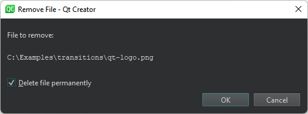

Create resource files
The Qt Resource System is a platform-independent mechanism for storing files in the application's executable.
To create a resource file:
- Select File > New File > Qt > Qt Resource File > Choose.

- Follow the instructions of the wizard to create a resource collection file (.qrc).
- Open the resource file in the resource editor.

- Select Add Files to locate and add individual files.
Sort resource files
To list the folders and files in ascending alphabetic order in the source tree, select Sort Alphabetically in the context menu.
Set a path prefix
By default, resources in the application are accessible under the same file name as they have in the source tree, with a :/ prefix, or by a URL with a qrc scheme. To specify a path prefix for all files in the .qrc file, select Add Prefix and enter the prefix in the Prefix field.
Set a locale
Some resources need to change based on the user's locale, such as translation files or icons. You can specify a locale in the Language field.
Use a lowercase, two-letter ISO 639 language code, such as de, en, or fr.
Remove resource files
Select Remove to remove the selected file from the resource collection.
In the Remove File dialog, select the Delete file permanently check box to remove the file from the file system.

To remove files that cannot be found in the file system, select Remove Missing Files.
The above functions are also available in the context menu in the Projects view.
See also Create files, Use project wizards, and QLocale.